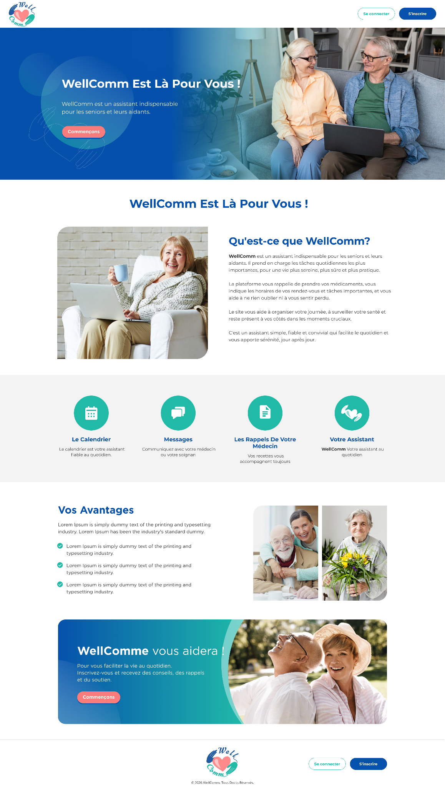

Objectifs
Le but général de ce projet était de développer une application web innovante destinée à faciliter la communication et la coordination entre les aidants et les professionnels de santé. Mon équipe et moi avait pour objectif de proposer un outil simple, intuitif et accessible, même pour les utilisateurs peu familiers avec les nouvelles technologies. Nous avons choisi d'appeler cette application wellcomm, contraction de "well" (bien-être) et "communication".
Description/Organisation
La première étape a consisté à faire le cahier des charges de la l'application, incluant les besoins fonctionnels et non fonctionnels et les risques.
La deuxième étape a consisté à faire la conception de l'application grâce à une maquette faite avec l'outil whimsical.
Ce projet a donné lieu à la livraison de l'application ainsi qu'à une présentation orale.
Outils et technologies utilisées
- Visual Studio Code pour le développement sur Next JS
- Intelij IDEA pour le développement sur Spring Boot
- Base de données sur PostgreSQL
- Figma et Zeplin pour la création de la maquette
Techniques et savoir faire acquis
- Découverte du framework Spring boot
- Création de personnas et cas d'utilisation
- Appliquer des principes d'accessibilité et d'ergonomie
- Identifier les statuts, les fonctions et les rôles de chaque membre d'une équipe pluridisciplinaire
